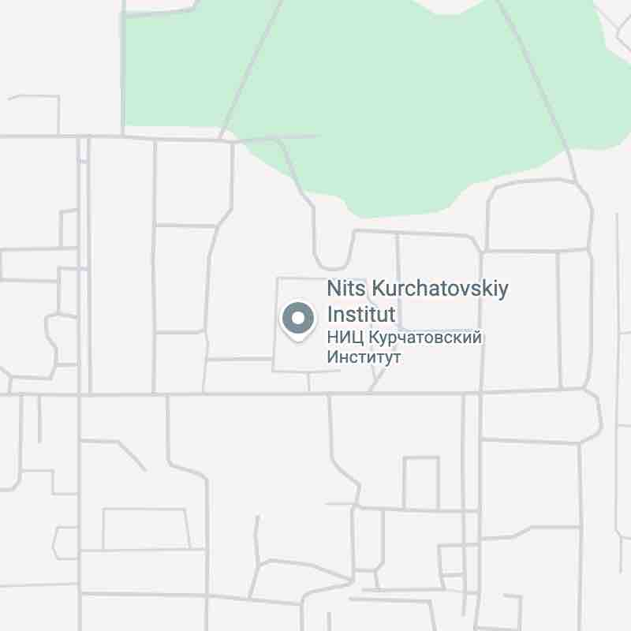
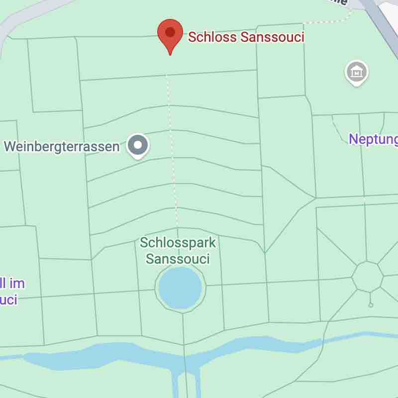

One equation for everything, or a different rule for every neighbourhood. The split that runs through all of machine learning. Eine Gleichung für alles — oder eine andere Regel für jede Nachbarschaft. Die Unterscheidung, die durch das gesamte maschinelle Lernen verläuft.
Somewhere in Moscow, the physicist Igor Kurchatov looked out at the grounds of his research institute and noticed that people were ignoring the paved paths. They cut across grass, wore tracks through gardens, found their own way. So he did something unusual: he waited. He let the paths form first — the ones people actually wanted — and only then paved them.
Irgendwo in Moskau blickte der Physiker Igor Kurtschatow auf das Gelände seines Forschungsinstituts und bemerkte, dass die Menschen die gepflasterten Wege ignorierten. Sie schnitten quer über den Rasen, trampelten Pfade durch Gärten. Also tat er etwas Ungewöhnliches: Er wartete. Er ließ erst die Pfade entstehen — jene, die die Menschen tatsächlich wollten — und pflasterte sie erst dann.
Sanssouci, a few hours west, was designed differently. Frederick the Great gave his gardeners a plan. Symmetry first. The paths exist where the geometry demands them, regardless of whether anyone's feet agreed.
Sanssouci, einige Stunden westlich, wurde anders entworfen. Friedrich der Große gab seinen Gärtnern einen Plan. Zuerst die Symmetrie. Die Wege existieren dort, wo die Geometrie es verlangt — unabhängig davon, ob irgendwelche Füße dem zugestimmt haben.


This is not a metaphor for which approach is better. Both parks are beautiful. Both serve their purpose. The question is what that purpose is — and what you lose when you choose one over the other.
Das ist keine Metapher dafür, welcher Ansatz besser ist. Beide Parks sind schön. Beide erfüllen ihren Zweck. Die Frage ist, was dieser Zweck ist — und was man verliert, wenn man sich für einen entscheidet.
Every model you build makes an implicit claim about the world: is the same rule true everywhere, or does the rule itself depend on where you are? This is the global vs local distinction. It is not about accuracy. It is about the shape of your assumptions.
Jedes Modell, das Sie bauen, macht einen impliziten Anspruch über die Welt: Gilt dieselbe Regel überall, oder hängt die Regel selbst davon ab, wo man sich befindet? Das ist der Unterschied zwischen global und lokal. Es geht nicht um Genauigkeit. Es geht um die Form Ihrer Annahmen.
One function fits the entire dataset. The same equation applies whether you are at the edge or the centre, in a dense cluster or an empty region. Linear regression is the archetype: one line for all the points.
Eine Funktion passt auf den gesamten Datensatz. Dieselbe Gleichung gilt ob am Rand oder in der Mitte. Lineare Regression ist das Urbeispiel: eine Linie für alle Punkte.
The assumption is that the world has a single underlying logic. You are trying to find it.
Die Annahme ist, dass die Welt eine einzige zugrundeliegende Logik hat. Man versucht, sie zu finden.
Different rules for different regions. The model adapts to local structure rather than imposing a single form. K-NN is the archetype: your classification depends entirely on who your neighbours are right here, not on a global fit.
Verschiedene Regeln für verschiedene Regionen. Das Modell passt sich der lokalen Struktur an, anstatt eine einzige Form aufzuzwingen. K-NN ist das Urbeispiel: Ihre Klassifizierung hängt davon ab, wer Ihre Nachbarn hier sind.
The assumption is that the world is patchwork. You are trying to map it.
Die Annahme ist, dass die Welt ein Flickenteppich ist. Man versucht, ihn zu kartieren.
Place some points by clicking on the canvas. Each point has an x value (horizontal position) and a y value (vertical position) — think of x as an input and y as the thing you are trying to predict. Then switch between a global fit (linear regression — one straight line for all the data) and a local fit (K-NN regression — each prediction is the average of K nearby points). Same data, very different curves.
Klicken Sie auf die Leinwand, um Punkte zu platzieren. Jeder Punkt hat einen x-Wert (horizontale Position) und einen y-Wert (vertikale Position) — x ist die Eingabe, y ist das, was Sie vorhersagen möchten. Wechseln Sie dann zwischen einer globalen Anpassung (lineare Regression — eine Gerade für alle Daten) und einer lokalen Anpassung (K-NN-Regression — jede Vorhersage ist der Durchschnitt der K nächsten Punkte).
Neither approach is free. Every choice along the global–local axis carries a cost on the other side.
Keiner der Ansätze ist kostenlos. Jede Wahl entlang der global–lokal-Achse hat einen Preis auf der anderen Seite.
Before you choose a model, ask: do I believe the world has one rule here, or many? If you believe in one rule, a global model is not a compromise — it is the honest choice. If you believe the world is patchy and local, imposing a global form is the dishonest one. Most real problems live somewhere in between. That is why ensemble methods exist — and why that is a different module.
Bevor Sie ein Modell wählen, fragen Sie: Glaube ich, dass die Welt hier eine Regel hat oder viele? Wenn Sie an eine Regel glauben, ist ein globales Modell kein Kompromiss — es ist die ehrliche Wahl. Wenn Sie glauben, dass die Welt fleckig und lokal ist, ist ein globales Modell die unehrliche. Die meisten echten Probleme liegen irgendwo dazwischen. Deshalb gibt es Ensemble-Methoden — und deshalb ist das ein anderes Modul.